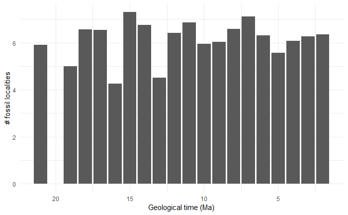
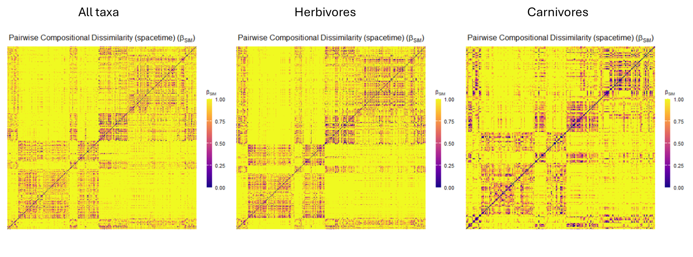
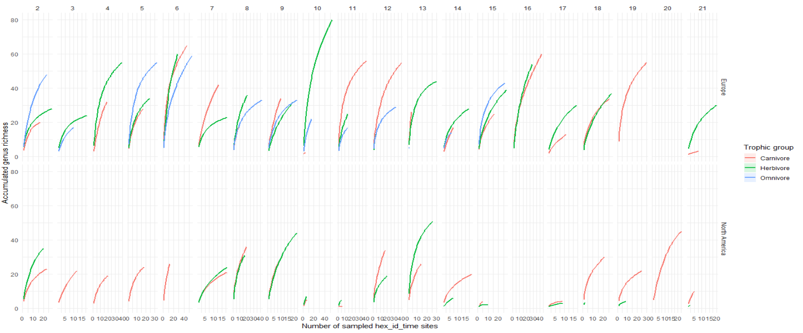
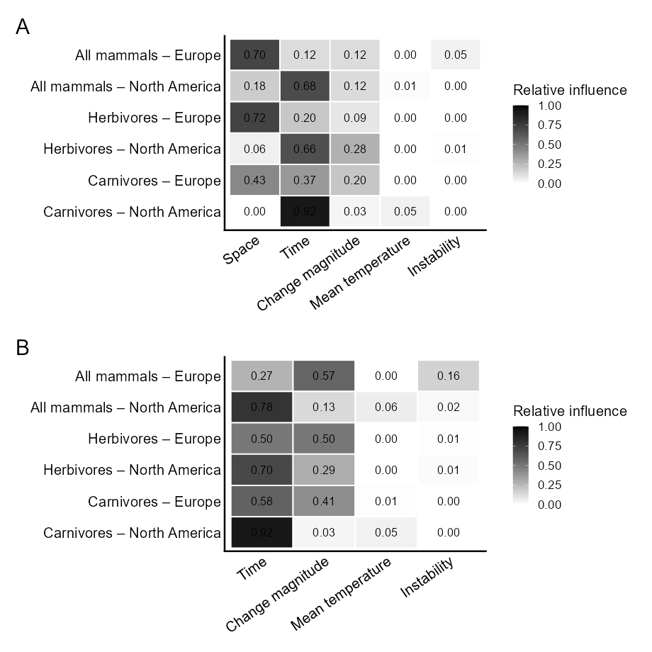
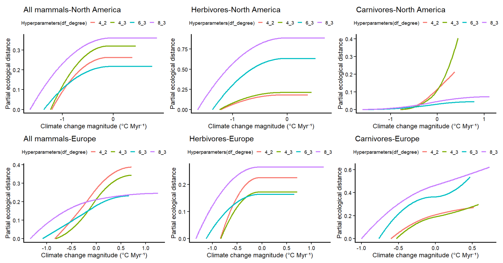
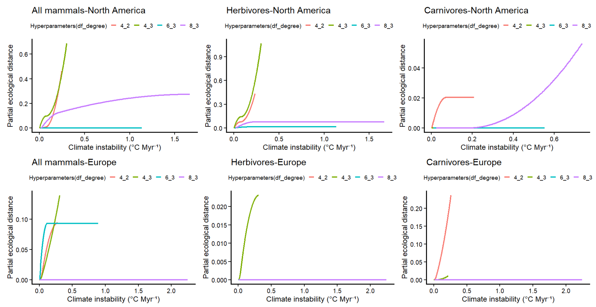
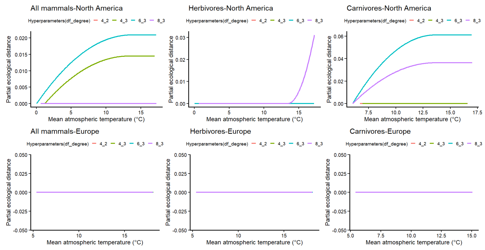

Appendix A — Climate change drove the deep-time assembly of biodiversity
A.0.1 Paleoatmospheric temperature data
All climate rasters were aligned to a common spatial grid so that each pixel represents the same geographic location through time. Grid cells were retained only when at least one valid observation was present, ensuring that analyses relied on empirical information rather than interpolation alone. For each grid cell, temperature values through time were treated as a time series, and a smooth trajectory was estimated using a generalized additive model (GAM). Spatially explicit reconstructions of mean annual surface temperature across the Northern Hemisphere from 23 to 2 Ma are shown at 1-Myr intervals and 1° × 1° spatial resolution. Each panel represents a single time slice and is displayed using a common color scale to allow comparison across time. These layers form the basis for estimating directional temperature change and climatic instability used in subsequent analyses.

A.0.2 Obtaining the rate of climate change
Once smoothed trajectories are obtained, temperature change is quantified as the difference between consecutive time steps. These first differences approximate the rate and direction of temperature change through time, allowing spatially explicit assessment of climatic dynamics rather than static climate conditions.

A.0.3 Estimating climate instability
Climate instability is measured as the standard deviation of mean temperature between consecutive time steps within a moving window of +-2Ma. This captures how variable the atmospheric temperature rather than the warming or the cooling trend. Lower values indicate more stable environments

A.1 Statistical analyses
A.1.0.1 Spatial binning of fossil locations into fossil paleoassemblages
Fossil occurrences were aggregated into standardized paleoassemblages using a spatiotemporal binning procedure. Records were first assigned to continents and then spatially grouped into regularly spaced bins (~100 km) to reduce the effects of uneven sampling intensity. Each spatial bin was combined with a discrete temporal bin based on rounded midpoint ages to define unique spatiotemporal assemblages. These paleoassemblages provide comparable units of community composition for subsequent analyses of turnover and paleobiogeographic structure.

A.1.0.2 Temporal binning of fossil locations into fossil paleoassemblages

A.1.0.3 Estimating turnover among fossil paleoassemblages
We estimated compositional turnover among paleoassemblages using genus-level presence–absence data. It first converts the fossil occurrences into a genus × paleoassemblage incidence matrix, then removes poorly sampled paleoassemblages by requiring a minimum number of observations (default: >3). Abundances are reduced to presence–absence to focus on composition rather than counts. Pairwise dissimilarities are then computed among paleoassemblages using the Simpson-based turnover component (β_SIM) from the betapart framework, yielding a matrix that quantifies the degree of taxonomic replacement (turnover) between all pairs of paleoassemblages.

A.1.1 Sampling intensity

A.1.1.1 Richness of fossil assemblages rarefied across geological time
Species richness was evaluated within each continent, trophic guild, and time bin using both rarefaction and richness estimation approaches. Fossil occurrence data were split into spatiotemporal subsets (continent × trophic guild × time bin), and for each subset we computed sample-based species accumulation curves (via repeated random permutations) to quantify how observed richness increases with the number of sampled localities. In parallel, we estimated pooled richness for each subset using nonparametric estimators to account for unseen taxa. Outputs from all subsets were then combined into a single data frame containing the number of sites sampled, mean accumulated richness, and uncertainty (standard deviation and standard error across permutations) for direct comparison of sampling completeness and richness trajectories across continents, trophic groups, and time intervals.
A.2 Relative contribution of GDM variables
A.2.1 Geography inclusion/exclusion

A.2.1.1 Sensitivity analyses
We tested four model configurations that represent different assumptions about how smooth temperature trajectories are through time. When analyzed together, they provide a sensitivity analysis to understand the impact of different temporal smoothing choices for the shape of temporal climatic trajectories and climate-fossil turnover relationships.
A.2.1.2 Sensitivity of Neogene temperature‐change estimates
gam_6_3 (df = 6, degree = 3): Allows relatively high flexibility. Temperature trajectories can follow finer temporal variation while remaining smooth, capturing long-term trends as well as moderate shorter-term fluctuations.
gam_4_3 (df = 4, degree = 3): An intermediate level of smoothing. With fewer degrees of freedom, the model emphasizes broader temporal patterns while still allowing nonlinear trajectories.
gam_4_2 (df = 4, degree = 2): A more conservative specification. Lower polynomial degree and fewer degrees of freedom produce smoother trajectories that highlight long-term climatic change while reducing sensitivity to short-term variation.
gam_8_3 (df = 8, degree = 3): The most flexible specification. With more degrees of freedom, the model can track finer-scale temporal changes, allowing the fitted trajectory to follow more detailed fluctuations in the temperature reconstructions.


A.2.1.3 Sensitivity of GDM effect estimates
A.2.1.3.1 Sensitivity to climate change

A.2.1.3.2 Sensitivity to climatic instability

A.2.1.3.3 Sensitivity to mean temperature
